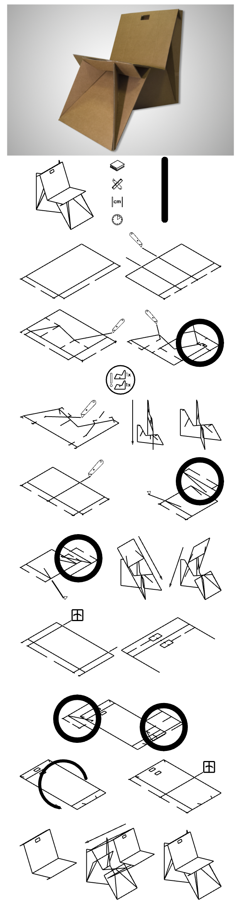
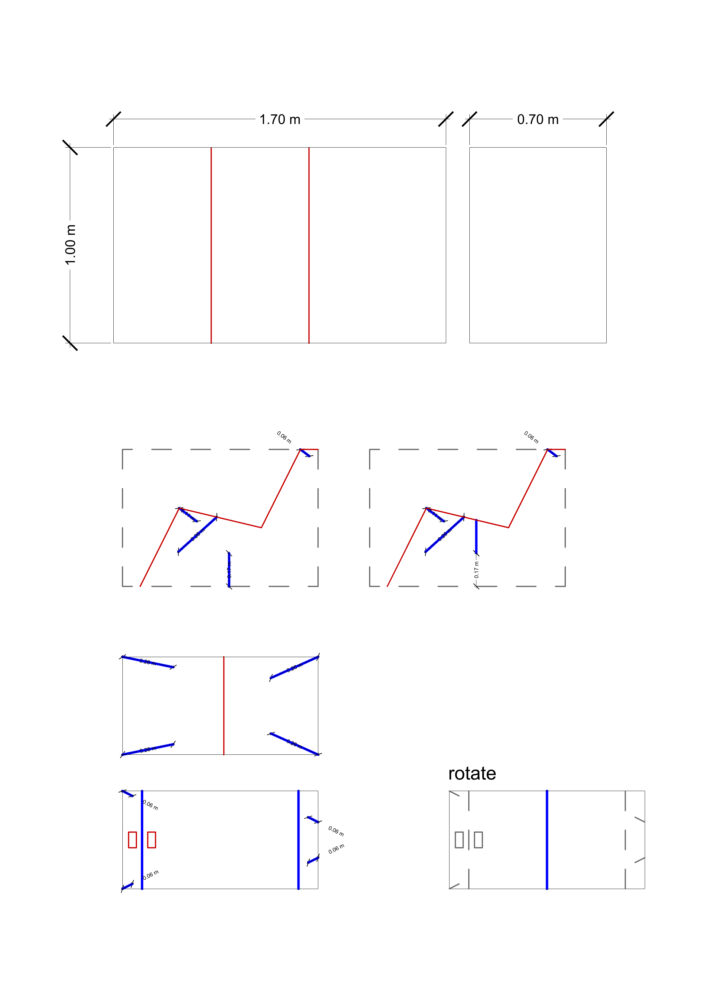
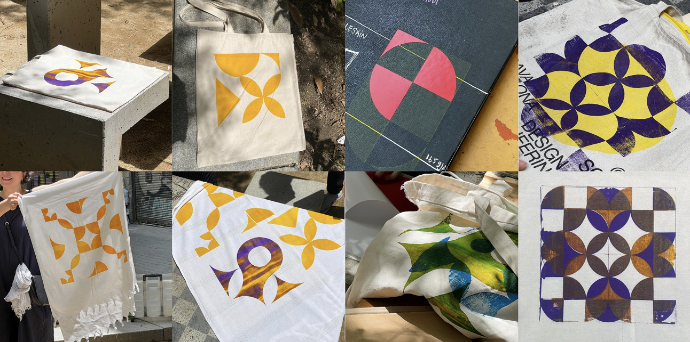
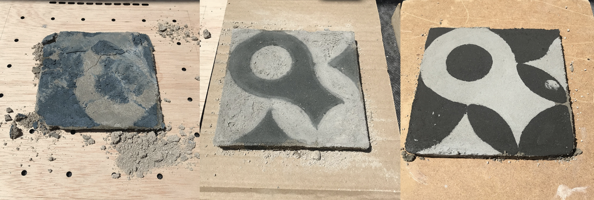
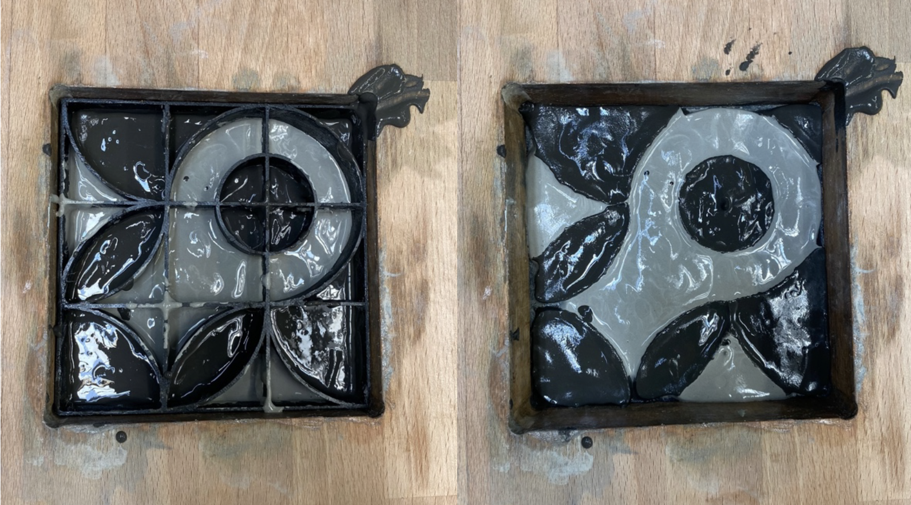
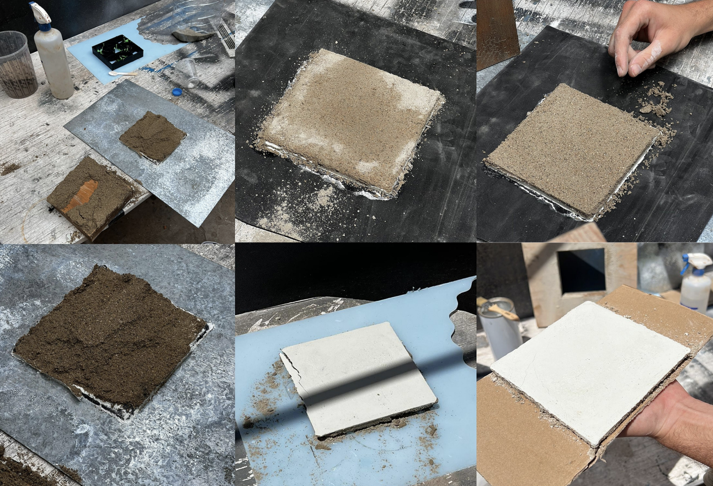

interventions¶
testing-phase;¶
01_intervention - just-make series_tote¶
november_2022
the challenge now was to design a specific article, whether it be a pair of pants or a tote bag (keeping in mind that i have no prior experience in textiles), and invite a few people to join this small intervention to create a close, intimate workshop (without assessing their skills beforehand). this idea of a small “production party” - “prodparty” for short (coined by our friend, korbi) - also acted as a networking event. we all talked, learned, understood, and shared a significant amount of information, both related to the workshop and unrelated.
02_intervention - just-make series_clay cup¶
november_2022
the idea of this small workshop was to understand the basics of a 3d printer - clay to be specific. the challenge was to get familiar with the material and educate about the basics of designing a basic cup on a digital software - we used rhino 3d - and then using the digital software “slice” the model to create stackable layers in order to articulate the object in 3-dimensions.
03_intervention - just-make series_cardboard furniture¶
december_2022
a third step for us was to evaluate the quality of the online education as non-makers. we did some research to find what is easily accessible for everyone. caglar had the most experience with this as his background is industrial design, i understood how to read drawings clearly. we invited our colleagues to evaluate this experience.
we found this cardboard chair - because 1. its cheap and 2. all its information is accessible online. check out the chair if you want :)
overall i thought the steps were far too complicated to be read clearly - also i realized the lack of any cad drawings (with clear dimensions/angles) could be challenging for some people to follow along with.
initial steps looked like this_

after simplifying the template for printing

03_cardboard-furniture by _AY
04_intervention - just-make series_tote 2.0¶
december_2022

lastly, our final involvement took place during a workshop organized by cdef - caixa d’eines i feines - a collaborative platform - we only took part, we did not organize anything. this workshop encompassed more than sewing; it centered around the exchange of knowledge, tools, materials, and care among participants. throughout the event, valuable insights were shared during the course of a single evening.
drawing upon collective sewing experience and expertise, the group aimed to inspire each other to explore the use of a sewing machine. for one member, it marked their first experience with machine sewing. collaboratively, various items were repaired, and a fabric shopping bag was successfully crafted – a project previously attempted by hand. this process highlighted the substantial impact of accumulated experience and clearer instructions on the final outcome.
application phase;¶
mkrspc_tile deco - development¶
march/june_2023
play in the physical - convert to the digital
project alignment¶
we started sharing our interests and discussing the fields we wanted to investigate in order to implement them into our interventions. these three circles illustrate the intersection of our main interests.

// defining key concepts_
- diy projects
- fabrication
- modular
- digital crafts
- making/production
- gamification
based on these concepts, we determined that we wanted to delve into the modularity of diy design. specifically, we aimed to explore how to simplify the design process by employing a clear methodology that combines physical and digital tools. to accomplish this, we established three stages:
stage 1 - 2D design pattern
stage 2 - 3D transformation iteration
stage 3 - interactive public workshop
project development¶
initially, we discussed both 3D and 2D options, and ultimately decided to concentrate on the 2D alternative. for a basic tile decoration, we required vinyl designs that would be attached to a stencil to transfer the ceramic ink. rather than supplying pre-made patterns, stickers, or vinyls, we opted to create a grid board that would enable users to create their own distinct designs.
based on these concepts, we determined that we wanted to explore the modularity of DIY design. specifically, we aimed to explore how to simplify the design process.
prototype #1 - tile deco¶
Tile Deco by caglaralkan
check out the full detailed process here here if you want :) and the link to the github repo here here
prototype #2 - tile deco 2.0 (pixel-cubes)¶
from 2D to 3D
// key concepts 2.0_
- create digital models through physical interaction
- how to transform a difficult process into a game
- how to define a DIY Kit to allow everyone to create 3D models
- create a process between physical and digital.
Pixel Cubes by Marc Parés
check out the full detailed process here here if you want :) and the link to the github repo here here
design dialouges ii by _AY
in the grand scheme, we had a chance to showcase and test pixel-cubes during design dialogues ii. we also applied textile screen-printing as part of our outcomes. our visitors mostly found the concept pretty intriguing and useful as a bridge between the real and digital realms. when we tried to get across our main aim - which is to back up maker spaces and diy projects by making digital tools user-friendly and accessible - our effort started to click.
the comments, feedback, and questions that stood out were:
1. being able to model or 3d print without being a 3d modeling whiz.
2. what's the next step to explore?
3. streamlining both digital and physical processes.
4. mixing the physical and digital worlds through a human-machine interface.
5. zoning in on the connections and gaps between these two worlds, and making digital fabrication less of a head-scratcher.
6. any chance this concept helps visually impaired folks in designing?
7. can we simplify design processes for everyone and make them more accessible?
8. it might be nifty to recognize those fiducials in the real world to get a feel for things.
updating our vision and plan, we’re thinking about giving our concept a spin within communities like “caixa d’eines y feines” that rally behind maker spaces and offer tools and workshops to individuals.
project development 2.0¶
firstly, we talked on 3D and 2D options and then we decided to focus on 2D option. Digital Tiles is a process to design tile paterns while playing with physical shapes. Then, generating a vectorised file you can 3D print a mould for hydraulic press production process to produce tiles in a easy and personal way.
prototype #3 - tile deco 3.0 (digital-tiles)¶
testing to real-life application
we applied the same fundamentals steps to perfect the application/process - simplifying and enhancing the 2d (physical) to 3d (digital) relationship of the design. creating with the same process two different outcomes. 1. a 2d stencil for screen-printing 2. a 3d stencil for hydraulic tile printing.
iii_tile-design_process by _AY
06_internvention - pattern making and textile printing¶
01_@mkrspc x caixa d’eines y feines¶
as we planned after the second term, we went ahead and did some tests with our gadget and design idea. our main focus, like we said before, is all about helping out those maker spaces and getting folks into using digital tools for their creative projects.
we took our device from flat to 3d, making it even cooler. we brainstormed some other ways to use it too. when we tried it out, we wanted to keep things hands-on and practical, you know? we were looking at stuff like how easy it is to try out and if it actually makes sense. that led us to two cool ideas: making designs for screen-printing and playing around with hydraulic tiles.
so, we teamed up with caixa d’eines y feines for a screen-printing workshop. but things didn’t go as planned – there was a rainstorm and the school was flooded with rain and we were unable to gather the needed equipment. luckily, we had prepared precut stencils and some of the screenprinting equipment gathered.
we explained how to stick the vinyl onto the frame with tape and gave a demo using tweezers, scissors, and other stuff we brought.
only four people showed up for the workshop (due to the weather conditions). they came prepared with their own fabric. we wanted them to lead the way and follow their creative process. after we got the stencils onto the frames, they picked their colors, and the screen-printing began. that is what caixa d’eines y feines stand for – they’re all about supporting makers and helping the community.
intervention-i by _AY
02_@mkrspc x caixa d’eines y feines¶
just as we planned, we organized a second screen printing workshop at the cdef anniversary bash. this was our chance to put our gadget, which we developed during the past few months, to the test – we called it the phygital therapy - wip imo. we had more than 30 makers from all kinds of backgrounds, from architects to finance folks.
we gave a quick rundown of what the workshop was all about and got everyone clued in on the gear and how things would roll. i led the way, showing how to work the system for designing. meanwhile, marc pares and caglar alkan tackled the vinyl cutting and got the stencils ready for the screen printing process.
intervention-ii by _AY
while the prototype had room for improvement – the detection system wasn’t as precise as we aimed for – participants still had a blast crafting their own designs using the physical pieces and witnessing the quick digital transformation. while creating, participants shared some insightful feedback. the magnets in the grid brought a bit of confusion, since they restricted item placement. we explained that grasshopper picked up shapes via the magnets in the center of each square, which cleared things up. still, loads of fantastic and one-of-a-kind designs emerged.
collaborating with caixa d’eines got us noticed, drawing plenty of curious folks eager to take part. plus, being in a public park meant passersby wanted in on the action too. a crew of urban sketchers got super into it and even used screen-printing to get a momento of their trip to barcelona in their notebooks.

03_@mkrspc x ateneu de fabricació la fàbrica del sol¶
this was our final workshop, wrapping up the mdefest. we’re gonna run another round of screen-printing, this time using the polished prototype. to pull this off, we teamed up with ateneu de fabricació de la fàbrica del sol. they’re all about curating workshops, spreading the word on digital fabrication, and providing folks up with tools to make cool projects happen that would otherwise be impossible to do.
07_internvention - tile making and hydraulic pressing¶
after the screen-printing workshops, we thought of using our pattern grid for a different purpose. we decided to explore a collaboration with ceramic studios. that led us to evan powel, a ceramic artist from “studio 137” in poblenou. we introduced ourselves, explained our project, and paid a visit to evan’s workshop at tmdc. he showed keen interest in teaming up.
with some brainstorming, we hit upon the idea of using our gadget to create hydraulic tiles – an old technique for crafting tiles. to get there, we needed to digitize shapes to form molds. we connected the pattern system to the hydraulic tile process. so when the system scans a shape, it gets turned into vectors and these vectors are pulled to create surfaces. these surfaces end up forming the molds for pouring liquid cement of different colors, giving rise to the tile shapes.
our first attempt at making tiles
tile-making_expirement 01 by _AY
this process is a true craft, demanding the perfect blend of ingredients like cement, sand, marble, pigments, and water, all heavily pressed using a hydraulic press. we aimed to keep it simple, using standard or diy tools. we mixed color and cement to deck out the tiles. usually, powdered color pigments mix with white cement and water. instead, we went for acrylic color pigments blended with gray cement. to ensure top-notch results and prevent larger particles, we sifted the gray cement.

we poured the color pigments and cement mix into the 3D printed frame as per the desired decoration. once we removed the frame, we layered more cement on top by sifting it. during the initial trial, we placed a mix of sand and cement on top and used a heavy hydraulic press, but it didn’t pan out. in the second trial, we simply added cement on top, yet it ended up dry and uneven. for the third and final round, we opted for thinner layers of cement, misted water on each layer, and put 2 tons of pressure using the hydraulic press.

a hydraulic tile is composed of three layers: the upper layer consists of marble powder, white cement, color pigments, and water; the middle layer is made of fine gray cement; and the lower layer is a mixture of sand and cement. during the second trial, we acquired marble powder and white cement, attempting various approaches to achieve optimal outcomes. we played around with different ratios for both the top and bottom layers to enhance the production process.

this journey involved numerous trials and errors, as we tweaked the components’ mixture, adjusted pressure and humidity, and refined the tools we’d created. one of these tools was a frame designed to prevent the tile from shifting when pressed. this underwent several iterations, as did the 3d printed mold that segregates shapes for distinct colors.
internvention-iii by _AY
this intervention is also set to be a part of the mdefest, where we try to demonstrate the possibilities of blending physical interaction with digital fabrication. alongside that, we’re aiming to highlight the worth of the craft process and shed light on the considerable effort that goes into crafting the end product.
overall it was sucessful - just need to find a way to spread the use of this tool.

__AY